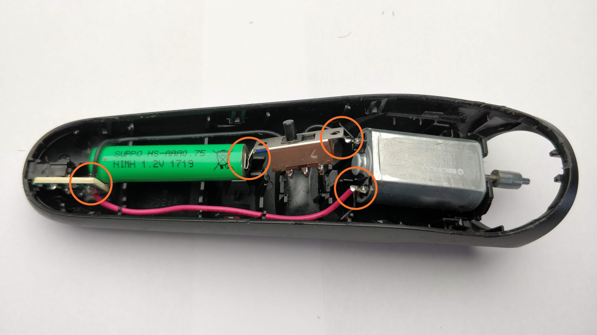
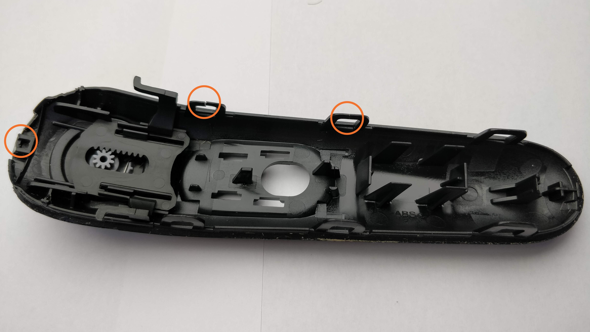
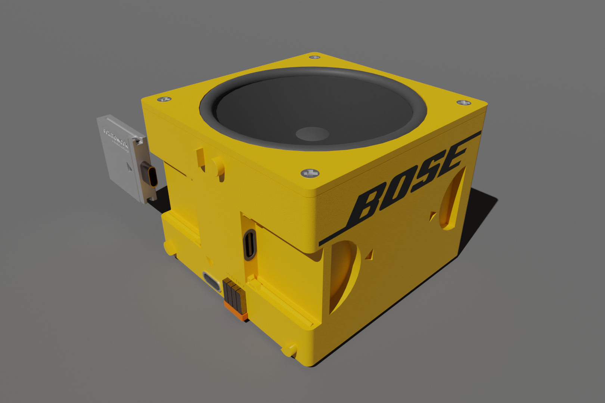
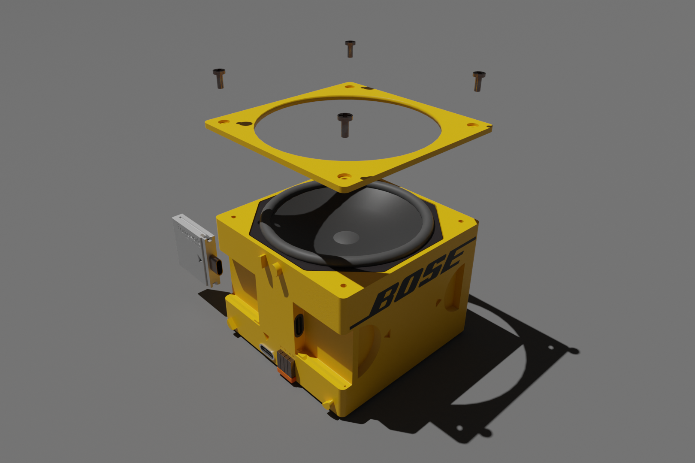

Project bits is a project that explores the possibility of creating consumer electronics products that
are
easily repairable and last a long time without comprimising on the performance of products.
At the beginning of the project I immersed myself into the persepctive of the user. This was done by attempting
repairs on consumer electronics products that otherwise would be replaced. multiple repairs were attempted and
common problems between theses repairs were identified.



Talk about the papers read.
An exploration into how to visualize repairability and make a device repairable. Using a beard trimmer as a
prop.
The results of various ideation sessions, with various levels of sketching. From quick and dirty to fully
rendered drawings with more communicative value. Some of these ideas were developed further while others were
scrapped.
After the ideation sketches an interesting future was envisioned. A future in which companies would sell modules
and parts and products can be created out of these modules. Or bought together. Making functional parts into
seperate modules could result in the current drive for companies moving from creating a slightly upgraded
product every year to actually improving modules seperately. Plus reaulting in a need for companies to have
universal standards to connect their product modules. Blender renders were created by showing this future
with a possible BOSE speaker module and a framework laptops cartridge which could also be used to deal with
various interfaces needed to interact with the device


The results of various ideation sessions, with various levels of sketching. From quick and dirty to fully
rendered drawings with more communicative value. Some of these ideas were developed further while others were
scrapped.


_1-min.jpg)